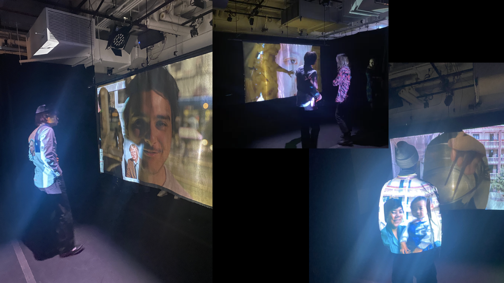

Interactive Installation · Projection Mapping · Storytelling
Chen · Corona · Ibrahim · Tang · Yang

This installation is a study in production and exhibition design, using dual projection and interactive light play to explore the experience of migration. Through layered visuals and audience interaction, the piece creates a dynamic space where personal and collective narratives unfold.
At the core of the installation is the tension between presence and absence—viewers engage with the projections by casting their own shadows, actively shaping the narrative. The interplay of light and movement transforms the exhibition into an immersive experience, emphasizing the fluid and evolving nature of identity in migration.
Designed for both individual and collective engagement, the installation balances spatial composition, interactive design, and cinematic storytelling, offering a space for reflection on displacement, adaptation, and memory.